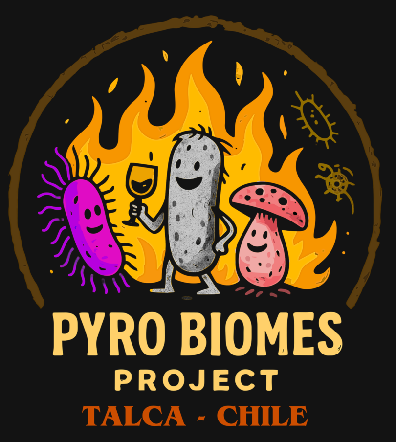
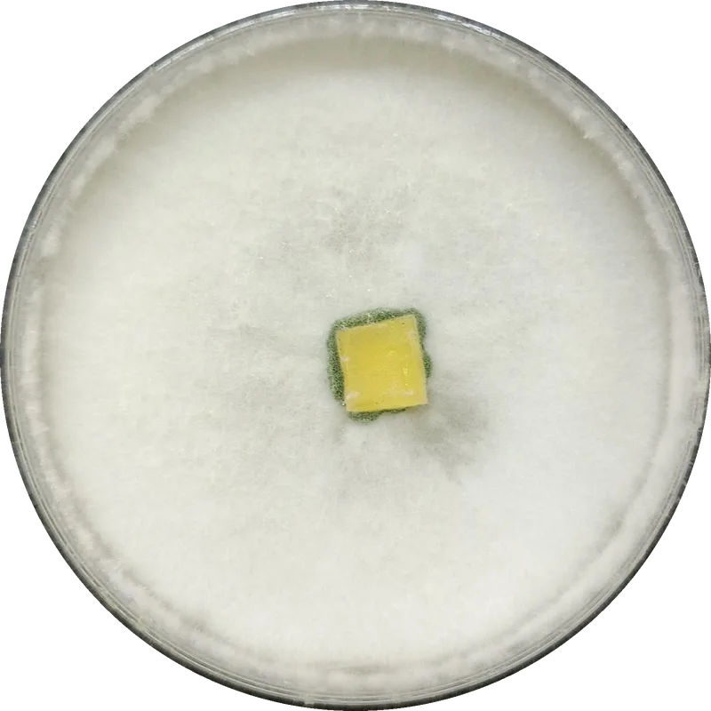
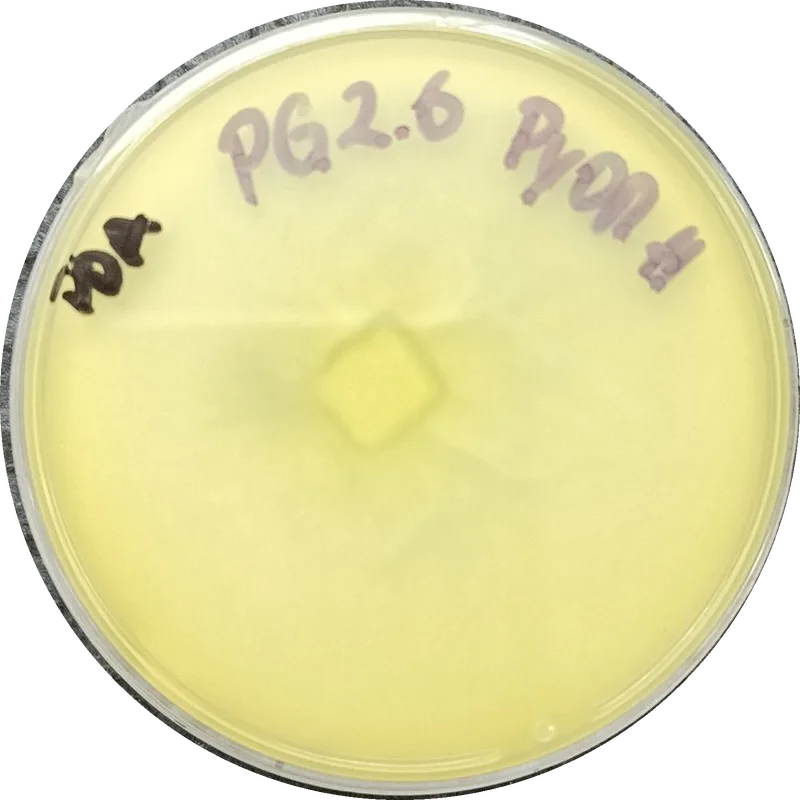
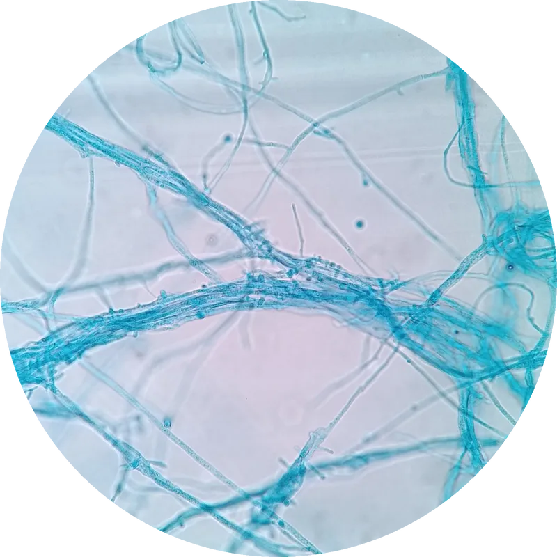

Pirobioma del Maule
Bacterias y hongos aislados desde suelos afectados por incendios forestales en la Región del Maule (Chile) como recurso biotecnológico para la restauración post-fuego.
Proyecto FONDECYT de Iniciación N° 11240628 · Universidad de Talca

El catálogo reúne 139 cepas cultivadas en medios selectivos con carbón de madera quemada como única fuente de carbono: 74 hongos y 65 bacterias, aisladas de suelos tanto de bosque nativo (de Nothofagus alessandrii y N. glauca) como de plantaciones de Pinus radiata, quemados en los megaincendios de 2017 y 2023.
El catálogo en números
![Infografía del catálogo: 139 cepas. 74 hongos, la mayoría Ascomycota (66); géneros más frecuentes Fusarium (27), Penicillium (21), Aspergillus (6), Purpureocillium (4) y Trichoderma (4). 65 bacterias, la mayoría Actinomycetota (46); géneros más frecuentes Pseudarthrobacter (13), Paenarthrobacter (13), Rhodococcus (12), Arthrobacter (7) y Enterobacter (5). Origen del suelo: hongos 51 de bosque nativo, 17 de plantación y 6 de setas; bacterias 38 de nativo y 27 de plantación. Condición de quemado: hongos 44 quemado joven, 24 quemado viejo y 6 de setas; bacterias 19 joven y 46 viejo.](img/infografia_pirobioma.jpg)
Toca la imagen para verla en tamaño completo.
Cada cepa, vista de diversas maneras
Las fichas del catálogo muestran la colonia macroscópica en placa y su imagen bajo microscopio (algunas con tinción), además de su taxonomía, su secuencia de ADN (16S o ITS) y un indicador de su capacidad para crecer utilizando carbón (madera quemada) como única fuente de carbono. En el ejemplo vemos a Trichoderma reesei (H16), un hongo aislado de bosque nativo quemado.
Datos e imágenes del catálogo bajo licencia CC BY-NC 4.0: libres para uso no comercial citando al Proyecto Pirobioma del Maule (FONDECYT 11240628). Para uso comercial, solicitar autorización a ian.acuna@utalca.cl.
- Tipo
- Hongo
- Origen
- Bosque nativo
- Condición
- Quemado joven
- Horizonte
- Superficial
- Taxonomía
- Ascomycota › Sordariomycetes › Hypocreales › Hypocreaceae › Trichoderma
- Crecimiento con carbón
- Crecimiento bajo
- Secuencia de ADN (ITS · 608 pb)
- GACCTGCGGAGGGATCATTACCGAGTTTACAACTCCCAAACCCAATGTGAACGTTACCAATCTGTTGCC…

Anverso
La colonia vista desde arriba: su color, textura y forma de crecer sobre el medio.

Reverso
La placa dada vuelta. Muchos hongos tiñen el agar con pigmentos propios que ayudan a reconocerlos.

Tinción
Al microscopio, las hifas y esporas teñidas. En las bacterias se usa la tinción de Gram.